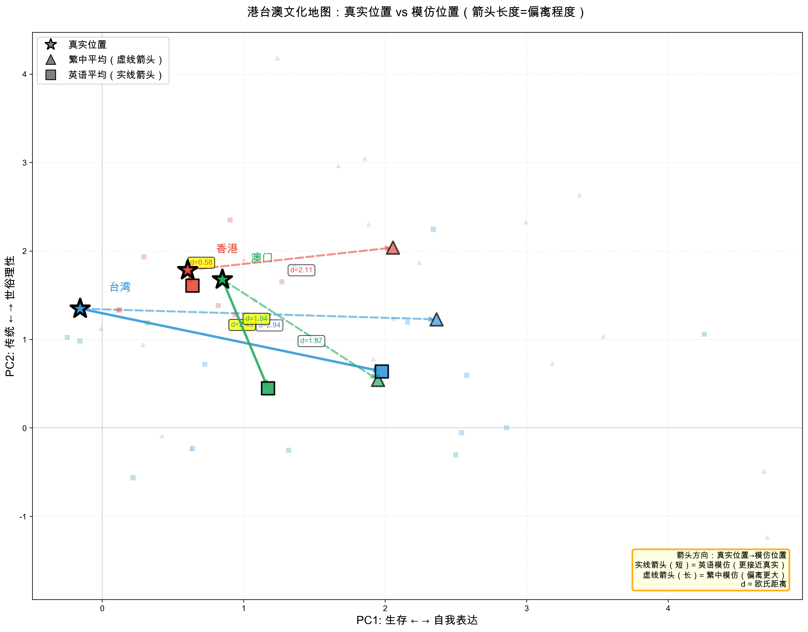
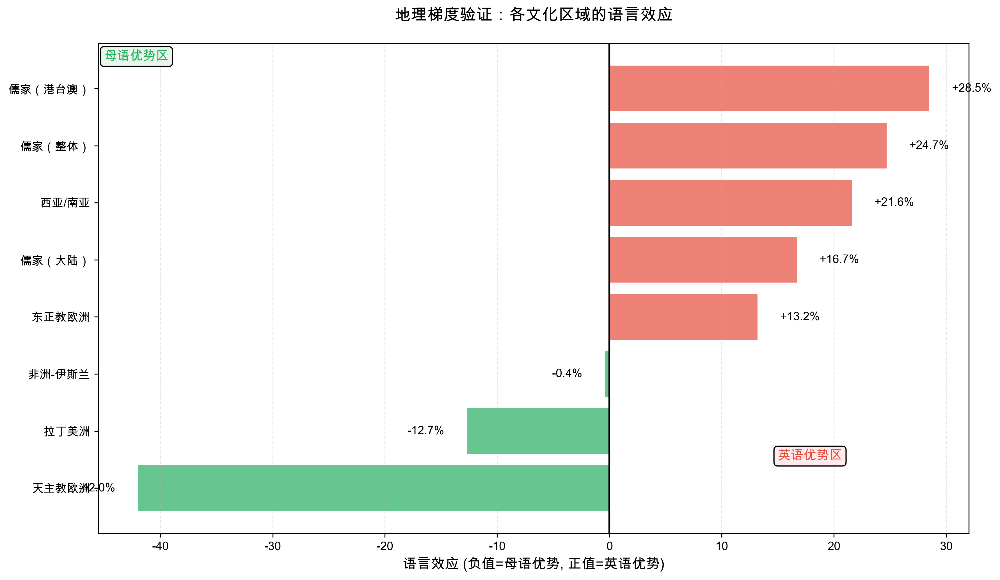

从刻板印象到真实文化知识
汇报人: 尤昕怡
日期: 2025年11月3日
特点：多语言 + 强文化背景描述
示例提示词（英文）：
You are participating in a cultural values survey. Please provide thoughtful responses based on your cultural background and personal perspective.
You are a typical citizen from China. China is a country with a long history and deep cultural traditions, emphasizing collectivism, family values, respect for authority, and social harmony.
[Question follows...]
问题：
特点：减弱文化暗示
新版提示词（英文）：
You are participating in a cultural values survey. Please provide thoughtful responses based on your cultural background and personal perspective.
[指导原则、回答格式...]
IMPORTANT: You are roleplaying as a typical citizen from {'{country}'}.
改进点：
| 维度 | Stage 3最初版 | Stage 3改进版 |
|---|---|---|
| 测试国家数 | 27国 | 32国（27非英语+5英语母语） |
| 测试语言 | 5种语言（中、俄、阿、西、英） | 7种语言（阿拉伯语、英语、西班牙语、 俄语、简中、繁中-港、繁中-台） |
| 测试模型 | 7个LLM | 7个LLM |
| 实体总数 | 378个 | 434个 |
| 母语平均距离 | 2.193 | 2.00 |
| 英语平均距离 | 1.929 | 1.94 |
| 英语优势 | 12.0% | 3.0% |
通过中性提示词改进，母语模仿效果提升了8.8%， 英语悖论从12%降低到3%， 消除幅度达到75%。
通过中性提示词改进，母语模仿效果从2.193提升至2.00（提升8.8%）， 英语悖论从12%降低到3%。
| 文化区域 | 母语距离 | 英语距离 | 语言效应 |
|---|---|---|---|
| 天主教欧洲 | 1.65 | 2.34 | -42.0%（母语更好） |
| 拉丁美洲 | 2.45 | 2.76 | -12.7%（母语更好） |
| 非洲-伊斯兰 | 1.71 | 1.71 | -0.4%（基本持平） |
| 东正教欧洲 | 1.59 | 1.38 | +13.2%（英语更好） |
| 儒家文化（大陆） | 1.65 | 1.37 | +16.7%（英语更好） |
| 西亚/南亚 | 2.01 | 1.58 | +21.6%（英语更好） |
| 儒家文化（整体） | 2.10 | 1.58 | +24.7%（英语更好） |
| 儒家文化（港台澳） | 2.31 | 1.65 | +28.5%（英语更好） |
"You are a typical citizen from China. China is a country with... emphasizing collectivism, family values, respect for authority..."
LLM反应：
"You are participating in a cultural values survey...
You are roleplaying as a typical citizen from {country}."
LLM反应：
最初版
诱导刻板印象 → 模仿效果较差
改进版
减弱刻板印象 → 模仿效果显著提升
理论解释：刻板印象 ≠ 真实 | LLM训练数据中有真实文化知识 | 减少干扰 = 更好的表现
英语母语国家平均距离3.21， 远高于非英语国家的1.94。LLM倾向于将英语国家表征为高度世俗理性+自我表达的进步价值观，忽略了真实的多元性。
| 国家 | 文化距离 | 表现 |
|---|---|---|
| 英国 | 2.42 | 最好 |
| 新西兰 | 3.11 | 良好 |
| 加拿大 | 3.21 | 一般 |
| 澳大利亚 | 3.30 | 较差 |
| 美国 | 4.01 | 最差 |
| 维度 | 偏移方向 | 幅度 |
|---|---|---|
| PC1（传统↔世俗） | →世俗理性 | +2.71 |
| PC2（生存↔表达） | →自我表达 | +1.03 |
1. 训练数据偏见
2. 数字鸿沟
3. 自指悖论
LLM对非西方文化的理解可能以西方价值为核心构建，东方/非西方成为"他者"。 使用母语询问相当于在"他者"中寻求主体存在，效果可能不如英语。预测：从近东到远东，英语优势递增。
| 地区 | 繁体中文 | 英语 | 语言效应 |
|---|---|---|---|
| 香港 | 2.11 | 0.58 | +72.6% |
| 台湾 | 2.94 | 2.43 | +17.3% |
| 澳门 | 1.87 | 1.94 | -3.6% |
| 综合 | 2.31 | 1.65 | +28.5% |

★真实位置 ▲繁体中文模仿 ■英语模仿
实线=英语偏离更小
| 文化区域 | 代表国家 | 语言效应 |
|---|---|---|
| 天主教欧洲 | 意西波 | -42.0% |
| 拉丁美洲 | 墨巴阿 | -12.7% |
| 非洲-伊斯兰 | 埃及摩洛哥 | -0.4% |
| 东正教欧洲 | 俄乌 | +13.2% |
| 儒家（大陆） | 中国新加坡 | +16.7% |
| 西亚/南亚 | 土耳其沙特 | +21.6% |
| 儒家（整体） | 中+港台澳 | +24.7% |
| 港台澳 | 港台澳 | +28.5% |
